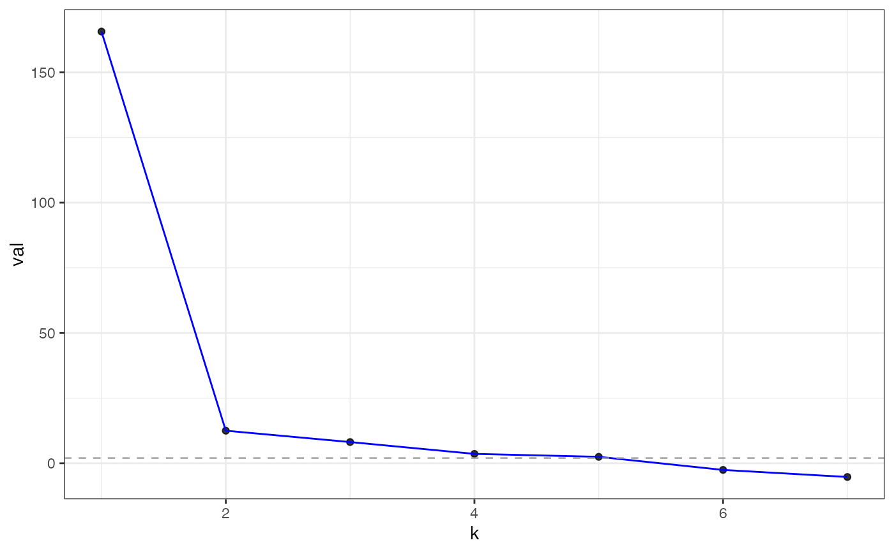

This computes the Z-scores from cross-validated eigenvalues
Examples
library(nycflights13)
im = make_interaction_model(~(month&day)*dest, flights)
cveig = pick_dim(im, dimMax = 7)
plot(cveig)

cveig
#> Estimated graph dimension: 4
#>
#> Number of bootstraps: 2
#> Edge splitting probabaility: 0.1
#> Significance level: 0.05
#>
#> ------------ Summary of Tests ------------
#> k z pvals padj
#> 1 166.5845382 0.000000e+00 0.000000e+00
#> 2 12.5981739 1.080448e-36 1.080448e-36
#> 3 8.2016440 1.185608e-16 1.185608e-16
#> 4 4.3154305 7.964608e-06 7.964608e-06
#> 5 0.5997185 2.743469e-01 2.743469e-01
#> 6 -1.9878241 9.765844e-01 9.765844e-01
#> 7 -3.9122195 9.999543e-01 9.999543e-01
#>